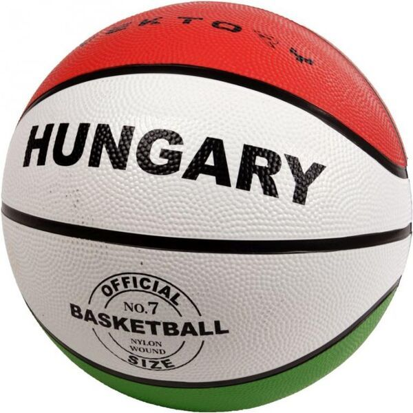
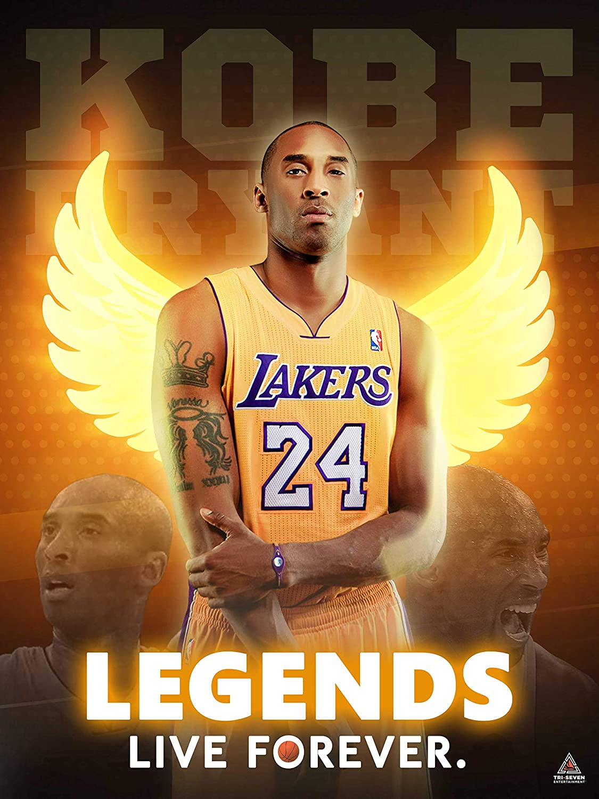

Kosár
Szabályok:
- A kosárlabda egy olyan labdajáték, amelyet két ötfős csapat játszik
- Mindkét csapatnak az a célja, hogy a labdát az ellenfél kosarába dobja, valamint megakadályozza a másik csapatot a labda megszerzésében, illetve kosár elérésében
- [1] Egy-egy kosár elérése után pontokat kapnak a csapatok. Egy kosár alapvetően két pontot ér. Ha távolról, a hárompontos vonalon túlról érik el, akkor három pontot, ha büntetődobásból szerzik, akkor csak egy pontot jegyeznek fel érte
-
A mérkőzést az a csapat nyeri meg, amelyik a mérkőzés végére több pontot ér el.tetlen eredmény nincs a kosárlabdában.
- Dön Ha a mérkőzés végén egyenlő az állás, akkor hosszabbítás következik ahányszor csak szükséges a győztes eldöntéséhez. Ez alól egy kivétel van, ha a csapatok oda-visszavágó mérkőzést játszanak.

- Ebben az esetben az első találkozón lehet döntetlen az eredmény, mert a teljes végeredményt a két mérkőzésen elért pontok összegzésével kell megállapítani. Ugyanekkor előfordulhat, hogy a második mérkőzésen annak ellenére hosszabbítást kell játszani, hogy az eredmény nem egyenlő, de az összesített állás viszont igen.
- Magyarországon a Nemzetközi Kosárlabda Szövetség (franciául Fédération Internationale de Basketball, FIBA) szabályai szerint játszanak. Ennek megfelelően a szabályos pálya mérete 15 x 28 méter, a kosarak részét képező gyűrűk magassága a talajtól számítva 3 méter és 5 centiméter.
- A játékidő 4 x 10 perc, az első és az utolsó kettő között két-két perc szünettel, míg a félidőben többnyire tizenöt perc pihenővel. A hosszabbítások öt percig tartanak. A csapatok félidőben térfelet cserélnek, de a hosszabbításokat úgy tekintik, mint a második félidő folytatását, így ekkor már nincs térfélcsere, bármennyi is legyen belőle
- A nők hatos, a férfiak hetes labdával játszanak. Utánpótlásversenyeken, tizennégy év alatt ötös labdát használnak. Tizenkét éves korig a gyűrű magassága is alacsonyabb lehet.
-
Bár a kosárlabda elsősorban teremsport, de szabadtéri változatai is ismertek például az utcai kosárlabda, azaz a streetball, valamint a 3x3-as kosárlabda. Ez utóbbi az Olimpiai Játékok programjában is szerepel az öt-öt elleni játék mellett 2020-tól kezdődően, ami a 2020-as járványhelyzet miatt valójában 2021 lesz.
- A kosárlabda szülőhazájában, az Egyesült Államokban a legfőbb bajnokságot az amerikai Nemzeti Kosárlabda Szövetség (angolul National Basketball Association, NBA) szervezi. Ennek sok ponton eltérnek a szabályai a FIBA által szervezett játéktól, de a két szövetség szorosan együttműködik, és az utóbbi évtizedekben jelentősen közelítették egymáshoz az előírásaikat.
- A kosárlabdát sebessége és variációs lehetőségei a nézői számára is rendkívül látványossá teszik, ezért napjainkra az egyik legnépszerűbb sportággá vált világszerte.
7 Érdekesség a játékról
- 1.Kezdetben 9 játékosból állt egy csapat, mint a baseballban, később lecsökkentették 5-re.
- 2.Eleinte barackos kosarat használtak gyűrű gyanánt, így a bírónak minden kosár után kézzel kellett kiszednie a labdát. Az első hálót az 1900-as évek elején kezdték el használni.
- 3.A játék kezdetén focilabdát használtak és a játékosok szénporral dörzsölték be a kezüket a jobb tapadás érdekében.
- 4.Először a labdavezetés nem volt a játék szerves része, mert leütés nélkül is haladhatott a támadó pár lépést. Csupán az 1950-es évektől jött be az 1 lépés-1 leütés szabálya.
- 5.A meleg kosárlabda jobban pattog, mint a hideg.
- 6.1923-ig a csapatok kiválaszthatták, hogy ki dobja a büntetőket, nem volt muszáj annak dobni, aki ellen a szabálytalanságot elkövették.
- 7.A legtöbb sérülés a kosárlabdában van, leggyakrabban a boka sérül meg, ugyanakkor térdsérülések miatt hagynak ki a játékosok a legnagyobb számban mérkőzéseket.
1936 óta a kosárlabda is része az olimpiai játékoknak.
A két legmagasabb játékos az NBA történetében 231 centiméterrel Gheorghe Muresan és Manute Bol volt.
Kobe Bryant
Tudnivalok:
- 1978. augusztus 23.
- olimpiai bajnok amerikai
- Észak-amerikai Profi Kosárlabdaligában
- Posztja: dobóhátvéd.
- 2018-ban az általa írt és producerként is jegyzett Dear Basketball című rajzfilmjével Oscar-díjat nyert az animált rövidfilmek kategóriájában.
- az (NBA), 1996 és 2016 között a Los Angeles Lakers csapatában játszott.
Gyerek kora:
1
- >Gimnáziumi éveit a philadelphiai Lower Merion High Schoolban kezdte meg. Másodikos koráig az apja edzette.
- 1995-ben az Adidas ABCD torna legértékesebb játékosának választották.
- Ezután a 76ers edzője (John Lucas) meghívta egy edzésre, ahol egy az egy ellen játszhatott Jerry Stackhouse ellen. Utolsó évében elvezette csapatát az Állami Bajnokság döntőjébe, amit meg is nyertek.
- A szezon során 30,8 pontot, 12 lepattanót, 6,5 gólpasszt, 4,0 labdaszerzést és 3,8 blokkot jegyzett meccsenként átlagban. Összesen 2883 pontnál fejezte be a gimnáziumi pályafutását a Délkelet-Pennsylvania mindenkori vezető pontszerzőjeként. Ezzel sikerült felülmúlnia Wilt Chamberlaint és Lionel Simmonst.
- Sikerült szinte minden fontosabb díjat megnyernie (Naismith High School Player of the Year, Gatorade Men's National Basketball Player of the Year, a McDonald's All-American, USA Today All-USA First Team player). Eredményei biztosították számára, hogy bármelyik egyetemen kaphasson ösztöndíjat.
- 7 évesen (sokak megdöbbenésére) végül Bryant mégis úgy döntött, hogy kihagyja az egyetemet és jelentkezik a draftra, hogy játszhasson az NBA-ben.